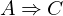
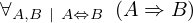
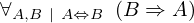

Show the Proof¶
In [1]:
import proveit
# Automation is not needed when only showing a stored proof:
proveit.defaults.automation = False # This will speed things up.
proveit.defaults.inline_pngs = False # Makes files smaller.
%show_proof
Out[1]:
| step type | requirements | statement | ||
|---|---|---|---|---|
| 0 | instantiation | 1, 2, 3 |  , ⊢ , ⊢ | |
 : , : ,  : :  | ||||
| 1 | theorem | ⊢  | ||
| proveit.logic.booleans.implication.iff_intro | ||||
| 2 | deduction | 4 | , ⊢  | |
| 3 | deduction | 5 | , ⊢ | |
| 4 | modus ponens | 6, 7 | , , ⊢ | |
| 5 | modus ponens | 8, 9 | , , ⊢ | |
| 6 | instantiation | 14, 17 | ⊢  | |
| : , : | ||||
| 7 | modus ponens | 10, 11 | , ⊢ | |
| 8 | instantiation | 16, 15 | ⊢  | |
| : , : | ||||
| 9 | modus ponens | 12, 13 | , ⊢ | |
| 10 | instantiation | 14, 15 | ⊢  | |
| : , : | ||||
| 11 | assumption | ⊢ | ||
| 12 | instantiation | 16, 17 | ⊢ | |
| : , : | ||||
| 13 | assumption | ⊢ | ||
| 14 | theorem | ⊢  | ||
| proveit.logic.booleans.implication.iff_implies_right | ||||
| 15 | assumption | ⊢ | ||
| 16 | theorem | ⊢  | ||
| proveit.logic.booleans.implication.iff_implies_left | ||||
| 17 | assumption | ⊢ | ||